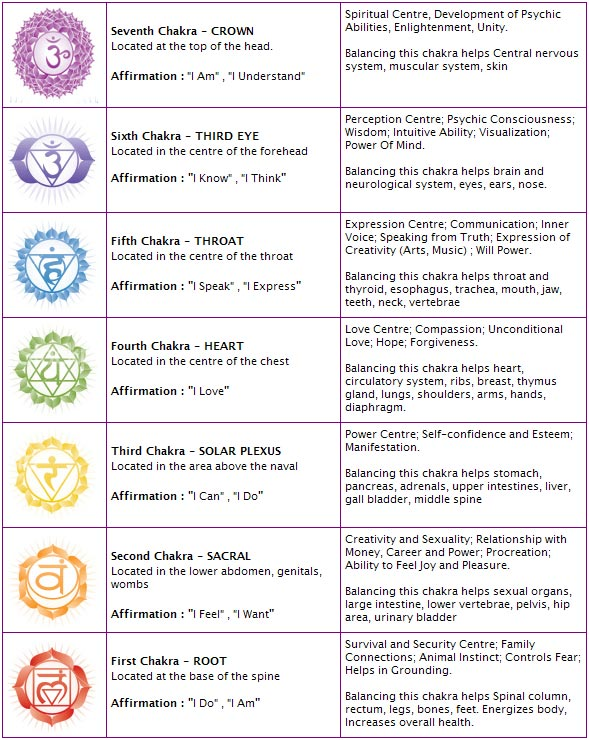

Yoga is a profound system of holistic health which originated in India over 5,000 years ago. It was first put into written form as the Yoga Sutras. The author was Patanjali (pronounced pa-tan-ja-li). Since the original work was in Sanskrit, there are many translations and interpretations. Yoga is defined in the sutras as having eight limbs or branches. It is the third limb "Asana" (pronounced a-san-a), which refers to postures or Yoga poses that most people perceive as Yoga. The study of asana and physical culture is called Hatha Yoga (pronounced hut-ha with the "th" aspirated). There are possibly more people doing Hatha Yoga now in the state of California than in the entire country of India.
facts about yoga
A male who practices yoga is referred to as a yogi.A female who practices yoga is called a yogini.
Yoga means to union, harmony and balance.
Yoga is believed to be made of eight limbs:
Yogis in India have conceptualized the seven "chakras," or wheels of energy since ancient times as the ethereal body (energy body that engulfs the physical body). They take in vitality (prana) from the surrounding atmosphere.They are located along the central axis of the body. These chakras govern the seven levels of the spiritual life of the yogic practitioner. The yogi strives to awaken or become conscious of these centers of energy through visualization and breathing exercises that concentrate attention on the areas in the body wherethey are located. Each is associated with a specific aspect of physical functioning and appears to be the center and energetic source of specific emotional qualities.The root chakra is related to earth grounding. It is also said to be the seat of the "Kundalini" or fiery serpent. Kundalini is thought to be an energy derived from the sun, stored at the base of the spine. When liberated it is thought to rush up the spinal cord to the brain, activating all the chakras as it passes through them.
what does yoga have to with medtitation?
well, theres a type of yoga called Yoga Nidra.The form of Yoga Nidra being described in this article can be called Advanced Yoga Nidra. In recent years Yoga Nidra has been distorted in ways similar to Yoga itself. Unfortunately, almost any guided practice that brings a modicum of relaxation is now called Yoga Nidra. Therefore, it is now virtually essential that we use another term, such as Authentic Yoga Nidra, Traditional Yoga Nidra, or Advanced Yoga Nidra.
Yoga Nidra brings an incredible calmness, quietness and clarity. Yoga Nidra is one of the deepest of all meditations, leading awareness through many levels of mental process to a state of supreme stillness and insight. The descriptions in the article below can be difficult to understand. With patient and thorough reading, the understanding is well worth the effort, allowing you to see the profound depth of Yoga Nidra, which is far beyond just relaxation. It is said that a picture is worth a thousand words. Sometimes it takes thousands of words to get the inner "aha" of the meaning. Most important of all, it is the persistent practice that brings the real joy of the practice of Yoga Nidra, as with all useful practices in life and Yoga.
Yoga Nidra means Yogic Sleep. It is a state of conscious Deep Sleep. In Meditation, you remain in the Waking state of consciousness, and gently focus the mind, while allowing thought patterns, emotions, sensations, and images to arise and go on. However, in Yoga Nidra, you leave the Waking state, go past the Dreaming state, and go to Deep Sleep, yet remain awake. While Yoga Nidra is a state that is very relaxing, it is also used by Yogis to purify the Samskaras, the deep impressions that are the driving force behind Karma
what does nidra bring?
Meditation: Imagine that you are in the WAKING state, with all of its distractions of mind. You systematically do this and that with directing your attention. You are practicing concentration and letting go, leading you towards meditation. The thoughts and pictures of the DREAMING state start to come to the surface, even though you are still in the WAKING state. Gradually, the distractions fade away, your mind becomes focused, and you are having a nice meditation. You are deeply relaxed. You are still in the WAKING state of consciousness, which is the nature of meditation.
it brings you to three states of consioucness which are waking, dreamming, and deep sleep.
Now, imagine that at some point you DROP or FALL or EMPTY (or other such words) into the STATE of DEEP SLEEP, much like you would normally do at bedtime (when not Dreaming). However, this time, you fell all the way THROUGH the Dreaming state, and came to rest in the DEEP SLEEP state, though, paradoxically, you remained aware and alert. This is the level UNDERNEATH both the WAKING and DREAMING states, and all of the thoughts and impressions that go along with those two states. Now you are in the STATE of CONSCIOUS DEEP SLEEP. This state is the state of YOGA NIDRA (Yoga Nidra refers to a state of consciousness, not just the methods that lead you there). Nidra means sleep (not Dreaming), and Yoga means union, where all of those other thoughts and impressions have receded back into the unified field from which they arose.

if your wondering what chakra is? go and click the button and it will tell you